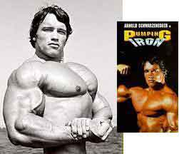

WilyWalnut.com
Meet the Genius in YOUR Brain!
HOME - IQ TESTS - CREATIVITY - GENIUS - BRAIN STORMING - BLOG "Discover Arnold Schwarzenegger's Terminator Goal-Setting Secrets For Body-building Your Mental Muscles So You Can Achieve Your Goals With Unfailing Precision!" For a PDF of this article, click here.Throw out your dusty image of the egghead genius and know that the 21st Century genius has muscles and can kick butt! You might not think you could snatch genius advice from a man whose biceps were bigger than your head, but when you look at the life of Arnold Schwarzenegger you can discover the secrets of unerring success. The Terminator Goal-Setting Strategy "I want to be the best built man in the world. Then I want to go to America and be in movies. I want The phenomenal laser-focussed way he powered forward to achieve goal after goal is revealed here. Use the goal setting secrets of this unstoppable "muscle bound monster", and you too can make mighty strides forward. Click with your passion! He's 15 years old and his soccer team are visiting a gym. Arnold looks around at the powerful muscular bodies of the men working out there and something clicks deep inside him. He suddenly realizes at a deep inner level that this is what he wants to do. He wants to feel strong and powerful like a mighty warrior or a fearsome beast. His mind lights up with a passion to do this.
Have you clicked with what you want to do and achieve? Do you dream mighty dreams? Faith Popcorn's book Clicking perfectly describes that moment of connection with your dream, purpose, vision or goal. Dream BIG! Soak up your subject!
Whatever your goal is, are you building up your knowledge base? Are you letting your obsession with it grow and grow so that you seek out and continuously find new references and knowledge that relate to and support the achievement of your goal? Are you giving it your all? When you focus on something and want it, your RAS (random activating system) in your mind becomes hyper sensitive to anything and everything that relates to your interest. Find someone you can emulate!
Seeing these heroic figures on the screen fueled his desire to be like them. He soon fixated on Reg Park, a massive man whose Herculean physique represented the ideal for Arnold. He had found a role model. From that point on, his life was "utterly dominated by Reg Park. His image was my ideal. It was fixed indelibly in my mind." Arnold found out everything he could about Reg Park, buying all the magazines that published Park's training programs. He learned what he ate, how he lived, and how he did his workouts. This obsession fueled his work-outs and he used his role model like a blueprint. If he did exactly what Reg Park did, he would get the same results.
Who is your mentor or role model? Who has already achieved the goal that you have set yourself? Who can you imitate? Whose meme can you catch? Find someone in your field of interest who has been successful and that you greatly admire and want to emulate; study them; find out all you can about them: live them; breathe them. There are heros is every field of human endeavor. Fine-tune your blueprint!
Keep at your goal visualisation. Play with it every day like a dog with a bone; keep chewing that sucker until you really get the taste of it. Keep sharpening the details, getting it into crystal focus. Adjust it until it sounds just right. Work it until it feels spot-on! The more real it seems inwardly, the more real it will become outwardly (unless, of course, you are freakin' nuts!). Like a cartographer: you are making a map, the details have to be there. Like an architect designing a house, you need to put in everything required to build that dream home. -------------------- Awareness! -------------------------- Stay positive! He also knew what a detrimental affect others can have on your goals, often trying to squash them. Negative people often resist positive people, and they feel uncomfortable around them until either they pull the positive person down to their level or they catch the positivity and change themselves.
Make sure you develop that kind of thick-skinned positivity! Family members can often be the greatest threat to our dreams. Without alienating them, you can be persistent in your pupose and goal. It is often advisable to keep goals secret, especially in the early stages. Get around those who can help you achieve your goal. Hang out with your mentors. Success breeds success. Arnold has always known and understood that principle. He always worked with the best people he could find or contact, saying: "Positive thinking can be contagious. Being surrounded by winners helps you develop into a winner." ------------------------------ Challenge your limits Each week, he would choose an exercise, and focus an entire workout on that exercise alone. Instead of 5 sets, he might do 55 sets or just keep going until he couldn't do another thing. Frequently, he would train with a like-minded partner and have little competitions to motivate himself to do better. They would challenge each other to do more reps with heavier and heavier weights. Apply this shock principle to your own goals. Let's say your goal is to become a public speaker on the seminar circuit. But you aren't very good at speaking. Maybe you have given 1 or 2 talks in the last few months. If you want to get good at talking you are going to have to up the ante. Schedule a talk a day for a month, or three talks a day for a week. Grab your soapbox and go and stand in the city park if you have to. Get out there and talk! The harder it is and the more you do, the quicker you will become comfortable and an accomplished speaker. Tony Robbins did this when he started his speaking career; he would be giving talks in the morning to the Business Bureau, talk in the afternoon to the Womens' Circle and then be giving a talk in the evening elsewhere -- and he did that week after week, month after month. The end result being he is one of the most fluent, entertaining, informative and successful speakers in the world. Make rapid relentless progress! At 18, he was drafted into the army to do his National Service. Fittingly, he joined the tank corp!The Junior Mr Europe bodybuilding competition was soon to be held in Germany and Arnold was determined to compete despite being denied leave of absence by his C.O. He decided he must compete and he went AWOL! Sometimes in the pursuit of your goals, you must risk all. Fortunately, Arnold's massive biceps won him 1st Prize and he returned to his barracks with trophy in hand. A week in solitary confinement was his punishment, but as word spread of his accomplishment, he was soon being feted as an example of Austrian heroism by his commanding officers. He soon went on to win Mr Universe in London. From there his dream was taking him to America.  Reality check, please! Being honest is one of the most valuable qualities anyone can have. On arrival in America, Arnold was immediately in competition with the world's top bodybuilders. He came 2nd - a terrible blow to his image of himself as the best. But he took it on the chin and coolly assessed his weaknesses and devised a plan to overcome them.
In the pursuit of your goals, you must be prepared to make course adjustments. This requires honesty and the ability to see things as they are, not as you wish them to be. When you see something as it is, you are in a more powerful position to change it.
Being outwardly-focussed also enables you to be more aware of opportunity. Arnold is a legendary prankster, who is quick to take advantage of unwitting minds. He uses this "what's-really-going-on-radar" to psychologically outmanouvre his competitors, and ensure that he achieves his goal. This sharp ability to observe is a powerful tool for critical thinking and assessing others. Arnold would look closely at what successful people do and at what unsuccessful people do. This enabled him to discern the behavior patterns to avoid and the behaviors to focus on. This enabled him to forge ahead where others languished on a plateau (or in a rut).
The Template of Success! Arnold took the process of success that he got from bodybuilding and applied it to other areas in his life. In bodybuilding, there are big goals such as winning a major competition like the Mr Olympia; there are medium-term goals like reaching an ideal weight of 235 lbs with 6% body fat ratio; and there are hundreds of short-term mini-goals like turning up at the gym (!), doing 12 reps of squats with 200lbs or cutting cakes from your diet. There is a deliberate process of discipline in achieving these goals. When you have any kind of success in your life, lift the template of that success up and apply it to other areas of your life in which you wish to succeed. If you have any experience of success, you can take that experience and replicate it elsewhere. And everyone has experienced success in their lives, even if you have to go back as far as learning to walk or talk or read.
In learning about business, Arnold applied the bodybuilding-template to his studies. He was a millionaire long before he made his name in Hollywood. He applied the bodybuilding template to his acting career and gradually built up the size of the roles he was offered and the "clout" he wielded amongst the studios.
Stay hungry! Arnold lives life in the large lane! "The meaning of life is not simply to exist, to survive, but to move ahead, to go up, to achieve, to conquer," he says. His motivating motto is "Stay Hungry!" That means don't get too comfortable. Success can deaden the senses and make you superstitious and think you have to do the same things over and over. Not so! You are alive and creative, and there are always new ideas and new levels of success to be gained. You are a muscular minded genius! Put your thinking muscle to good use and trail blaze a path of glory! To Valhalla... Pumping Neurones? Get brain-building with Wily Walnut! This Wily Walnut article explores the unstoppable goal-setting techniques of The Terminator, Arnold Schwarzenegger! It includes having BIG dreams, clicking with your passion, soaking up your subject, using role models, clarifying your blueprint, staying positive, challenging your limits, organizing your life to make rapid progress, being reality-focussed and self-honest, applying the template of success, and staying hungry for MORE! For a PDF version of this article, click here. Got Feedback? I'd love to hear from YOU! Email me: wily[at]wilywalnut.com
IQ TESTS - CREATIVITY - GENIUS - BRAIN STORMING - SELF-HELP - BRAINTEASERS - WILY WALNUT | ||
|


"Unleash Your Inner Genius For Creativity & Innovation!" Copyright 2001-2015 WilyWalnut.com SITE MAP